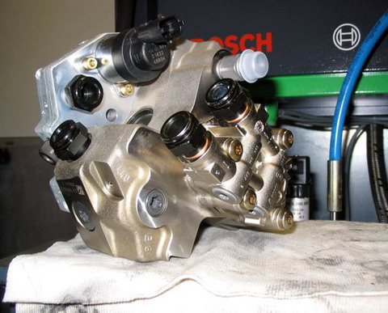

A képen a Bosch CP1 típusú magasnyomású szivattyú látható. 1350 bar nyomás előállítására képes, melyet a kép jobb oldalán lévő nyomásszabályozó-szeleppel szabályoz. Ez a szabályzószelep egyes járműtípusoknál nem a szivattyún, hanem a közös magasnyomású csövön található. A rendszer hátránya, hogy a szivattyú az összes bemeneti üzemanyag mennyiséget összesűríti, melynek nagy részét le is engedi rögtön az üzemanyagtartályba. Ezáltal felesleges munkát végez, jelentősen melegíti az üzemanyag hőfokát.
A képen a Renault Magnum kamion CP2 magasnyomású szivattyúja látható. Érdekessége, hogy "csak" két hengeres, de egy körülfordulás alatt háromszor is megemeli az adagolóelemeket. Ezt a különleges kialakítású bütyköstengelye teszi lehetővé, mivel elemenként 3 bütyökprofil található rajta.
A képeken a Bosch CP-3 típusú magasnyomású szivattyú látható. A szivattyún található elektronikus szelep, a bemeneti mennyiség-szabályozó szelep. Feladata, hogy a jármű vezérlőegységébe betárolt adatoknak megfelelően, mindig csak annyi üzemanyag kerüljön a szivattyúba, majd onnan a railcsőbe, amennyit a porlasztók befecskendeznek az égéstérbe.
A képen a CP-3 típusú szivattyú IVECO tehergépjárműveiben alkalmazott kivitele látható. Nagyobb, erősebb kivitelű, mint a személygépjárműveké. Az üzemanyag-szállító fogaskerék szivattyúja külső csövezéssel szállítja az üzemanyagot a szivattyúba.